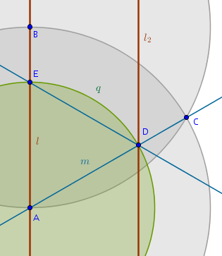
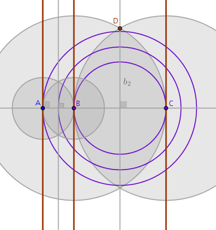

Ruler and Compass Constructions 03
Problem
construct an equilateral triangle on the three given parallel straight lines
Process
1) Let us use the scope reduction approach. What are the simpler limiting cases of the same problem? When the given parallel straight lines are equally distanced from each other:
The solution then is*:
- choose a point \(A\) at random on any given straight line
- construct a perpendicular \(AB\) to that straight line through \(A\)
- construct a \(Circle(A, AB) = q\) until it intersects the middle straight line at \(C\)
- the equilateral triangle \(ABC\) is the one sought-after
What other properties of this construction are interesting? The perpendicular bisectors to \(AD\) and \(DB\) cut through the middles of \(AC\) and \(CB\). \(Circle(B, BD)\) and \(Circle(D, DB)\) intersect at \(E\) which cuts \(CB\) in half and lies on \(DB\)'s bisector. Same behavior applies to the circles built on the remaining sides \(AC\) and \(CB\).
2) The second limiting case we have is when the middle parallel straight
line is moved until it coincides with one of the bounding parallel straight
lines resulting in a two-line formation. How do we construct an equilateral
triangle then? Here is one way:
- choose a point \(A\) on \(l\) at random
- construct a perpendicular to \(l\) through \(A\) to locate \(B\)
- construct a \(Circle(A, AB) = p\)
- construct a \(Circle(B, BA) = q\)
- \(p \cap q = C\)
- straight line through \(A\) and \(C\)
- \(\angle BAC = 60^{\circ}\)
- bisect \(\angle BAC\) to locate \(D\), the second vertex of the future equilateral triangle
- \(Circle(A, AD) = s\)
- \(s \cap l = E\) - the third vertex of the equilateral triangle sought-after:
3) The above construction is rather complicated, \(10\) steps. The simpler
way would be to construct any equilateral triangle with two
arbitrary vertexes on \(l\):
- choose the points \(A\) and \(B\) on \(l\) at random
- using Euclid's B1P1 construct an equilateral triangle on \(AB\) using Euclid's to locate \(C\)
- straight line \(m\) through \(A\) and \(C\)
- \(m \cap l_2 = D\)
- construct a \(Circle(A, AD) = q\)
- \(q \cap l = E\)
- the equilateral triangle \(ADE\) is the one sought-after:
This construction is a bit simpler - five steps only.
4) Now it is more or less clear how to proceed:
- choose a point \(A\) on \(l\) at random
- construct a perpendicular to \(l\) through \(A\) to locate the points \(B\) and \(C\):

Next:
- bisect \(AB\) with \(b_1\)
- bisect \(BC\) with \(b_2\)
We anticipate that the middles of the two sides of the future equilateral triangle will be located somewhere on \(b_1\) and \(b_2\):
We can also:
- bisect \(AC\) with \(b_3\)
We anticipate that the middle of the future equilateral triangle's third side should be somewhere on \(b_3\). But that does not seem to give us any advantage.
How do we locate any of these middles? Let us draw some more circles centered at various points obtained so far and with various radii equal to obtained distances:
The new circles do not seem to add any new clues. Let us compare the last construction with the first one. Stop. Wait a second. The two circles intersecting at \(D\) look interesting now. The point \(D\) is on the perpendicular bisector. This looks familiar. In the first drawing all the smaller circles that we constructed cut the sides of the equilateral triangle in half.
Now let us compare this drawing to our complicated triangle construction on just two parallel straight lines. The hunch: the point \(D\) is the middle of one of the sides of the future equilateral triangle. Not only that. Further, the circles which are used to bisect the common perpendicular \(AB\) seem to form an invariant of sort - their intersection always falls on the dead middle of one of the sides of the future triangle.
Let us test this theory on a completely different arrangement of parallel straight lines and an already constructed equilateral triangle (we are using the reverse order problem-solving approach here):
This looks plausible and it seems that the circles \(p = Circle(D, DE)\) and \(q = Circle(E, ED)\) indeed form an invariant:
- choose a vertex of the equilateral triangle, \(A\), on any of the
given parallel straight lines, \(l\)
- a perpendicular to \(l\) through \(A\) will intersect the remaining
two given parallel straight lines at \(D\) and \(E\)
- construct a \(Circle(D, DE) = p\)
- construct a \(Circle(E, ED) = q\)
- \(p\) and \(q\) will intersect at the exact middle of the side of the
equilateral triangle opposite to its chosen vertex, \(A\)
If \(D\) is the middle of one side of the future equilateral triangle
then we are almost done. Continuing with our process:
- construct a straight line \(s\) passing through \(A\) and \(D\):
- construct a perpendicular to \(s\) through \(D\) to locate the remaining
two vertexes of the equilateral triangle, \(E\) and \(F\):
Cleaning up the construction to contain only the lines that are needed,
we obtain:
From B3P10, a circle does not cut a circle at more than two points, it follows that we will have the second point of intersection of \(p\) and \(q\). Consequently, a full solution should include the second equilateral triangle symmetrical to the first one about the perpendicular to \(l\) through \(A\):
Earlier we have noted that the two-circle invariant is applicable to the remaining two given parallel straight lines - will the equilateral triangles constructed on them be unique?
Here is the construction based on choosing the vertex on the middle given parallel straight line, \(l_1\):
Here is the construction based on choosing the vertex on the remaining given parallel straight line, \(l_2\):
We see that the resulting equilateral triangles are essentially identical.
Conclusions
- it took me about two hours of tinkering with the given arrangement of parallel straight lines to work out the solution in several non-continuous attempts
- I tried several different cases and constructed more lines than were needed in the end
- the hunch that lead me to a solution was based not on a simpler but rather on a more complex construction I did for an equilateral triangle built on two parallel straight lines. However, to be perfectly honest, it is still not clear to me as to where exactly did that hunch come from
Proofs, Explanations
1) From B1P1 it follows that the only object needed to construct an equilateral triangle on three evenly spaced parallel straight lines is a perpendicular through a random point, \(A\), on any one of the given straight lines:
2) Constructing an equilateral triangle on two parallel straight lines.
From B1P1 it follows that by construction:
$$\angle BAC = 60^{\circ}$$and, by construction:
$$\angle BAC = 60^{\circ}$$ $$\angle DAC = \angle DAB = 30^{\circ}$$ $$\angle BAE = 90^{\circ}$$It follows then that:
$$\angle EAC = \angle BAE - \angle BAC =$$ $$90^{\circ} - 60^{\circ} = 30^{\circ}$$ $$\angle EAD = \angle EAC + \angle DAC =$$ $$30^{\circ} + 30^{\circ} = 60^{\circ}$$But \(\triangle EAD\) is isosceles by construction and from B1P5 it follows that the internal angles at its base are equal:
$$\angle AED = \angle ADE = x$$From B1P32 we have:
$$\angle EAD + 2x = 180^{\circ}$$ $$x = 60^{\circ}$$B1P6 states that if in a triangle two angles equal one another, then the sides opposite the equal angles also equal one another. Applying this proposition to, for example, angles \(EAD\) and \(EDA\), we obtain:
$$AE = DE$$but, by construction:
$$AE = AD = r$$and hence:
$$AE = AD = r = DE$$which means that and according to B1D20 \(\triangle AED\) is equilateral:
3) Constructing an equilateral triangle on two parallel straight lines.
The proof that \(\triangle AED\) is indeed equilateral for this, simpler, \(10-\)step, construction is essentially the same as the proof above, just shorter. By construction:
$$\angle BAC = 60^{\circ}$$ $$AE = AD = r$$and hence \(\triangle ADE\) is isosceles. From B1P5 it follows that:
$$\angle AED = ADE = x$$and from B1P32 it follows that:
$$\angle EAD + 2x = 180^{\circ}$$ $$x = \angle EAD = \angle BAC = 60^{\circ}$$From B1P6, for angles \(EAD\) and \(EDA\), we obtain:
$$AE = DE$$but:
$$AE = AD = r$$and hence:
$$AE = AD = r = DE$$and according to B1D20 \(\triangle AED\) is equilateral:
4) To prove that the triangle that we have constructed on three arbitrarily
spaced parallel straight lines is equilateral we will follow the template from
the previous two proofs: we will first prove that the triangle is isosceles,
then we will prove that an angle at one of the vertexes is \(60^{\circ}\) and
then we will apply B1P6 to appropriate angles to prove that
all three sides of the triangle are equal.
Before we deep dive into the proofs we observe that the angles \(BED\) and \(BAD\) subtend the same line segment (chord?) \(BD\) while the angles \(AEB\) and \(ADB\) subtend the same line segment (chord?) \(AB\). Could the four points \(A, B, D, E\) be concyclic? Let us keep this in the back of our minds.
Now let us prove that:
$$DE = DF$$From B1P10 it follows that the point \(D\) is equally distanced from \(l_2\) and \(l_3\) which means that if we construct a perpendicular to, say, \(l_3\) through \(D\):
then:
$$DG = DH$$Next, consider \(\triangle EGD\) and \(\triangle FHD\) in which, by construction, the angles \(EGD\) and \(FHD\) are right and the angles \(EDG\) and \(FDH\) are vertical. From B1P15 it follows that:
$$\angle EDG = \angle FDH$$which means that based on ASA congruence principle \(\triangle EGD\) and \(\triangle FHD\) are congruent from where it follows that:
$$EG = FH$$ $$DE = DF$$Next, let us prove that \(\triangle EAF\) is isosceles. Consider \(\triangle ADE\) and \(\triangle ADF\). We just proved that:
$$DE = DF$$The angles \(ADE\) and \(ADF\) are right by construction and so are \(\triangle ADE\) and \(\triangle ADF\) which share a common side, \(AD\). From SAS congruence principle it follows that these two right triangles are congruent and:
$$AE = AF$$Lastly, let us prove that:
$$\angle AEF = 60^{\circ}$$Being a composite angle by construction, we represent \(\angle AEF\) as a sum of two angles:
$$\angle AEF = \alpha + \beta$$Our idea now is not to compute \(\alpha\) and \(\beta\) separately but rather prove that their sum must be equal to \(60^{\circ}\):
By construction from B1P1 it follows that:
$$\angle CBD = 60^{\circ}$$The angle \(CBD\) is also an exterior angle for \(\triangle ABD\). From B1P32, an exterior angle is the sum of two opposite interior angles, we have:
$$\angle BAD + \angle BDA = 60^{\circ}$$What remains to be proven is that:
$$\angle BAD = \alpha$$ $$\angle BDA = \beta$$and that is where our "\(A, B, D, E\) are concyclic" hunch comes in handy rendering this proof trivial.
We observe that by construction \(\triangle ABE\) and \(\triangle ADE\) are right and they also share a common hypotenuse, \(AE\). From B3P31 or Thales' Theorem it follows that in order to locate the center of a circle whose circumference contains both right angles, \(ABE\) and \(ADE\), all we have to do is bisect the line segment \(AE\):
This proves that the points \(A, B, D\) and \(E\) are indeed concyclic and from B3P21, in a circle the angles in the same segment equal one another, it follows that since the angles \(BED\) and \(BAD\) both subtend the same line segment \(BD\) and the angles \(AEB\) and \(ADB\) both subtend the same line segment \(AB\), we have:
$$\angle BAD = \alpha$$ $$\angle BDA = \beta$$which, for the record, proves that:
$$\angle AED = 60^{\circ}$$But \(\triangle EAF\) was proven to be isosceles with:
$$AE = AF$$which means that:
$$\angle AED = \angle AFE = 60^{\circ}$$From B1P32 it follows that:
$$\angle EAF = 60^{\circ}$$Applying B1P6 to angles \(EAF\) and \(AFE\) we obtain that:
$$AE = FE$$rendering \(\triangle AEF\), according to B1D20, equilateral.
\(\blacksquare\)